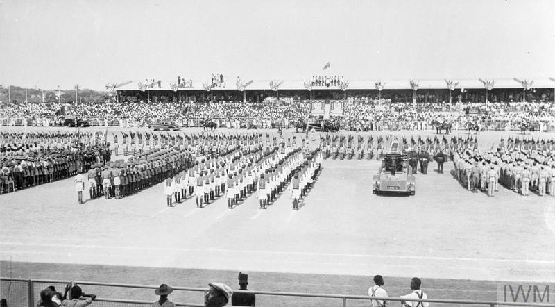

Traditional Clothing and Fashion
Kente, adinkra, smock, beads and contemporary Ghanaian fashion all express identity, symbolism and creative pride.
Ghana @ 70
From colourful festivals and beautiful kente cloth to delicious traditional dishes, powerful rhythms, and ancient traditions, discover the culture that makes Ghana unique.


Culture of the Week
Ghanaian culture is not only about special celebrations. It is present in family meals, spirited greetings, clothing, music, storytelling, and the deep respect people give to elders and community.
This week, we celebrate the richness of Ghanaian festivals, the beauty of local languages, and the role of cultural heritage in shaping national identity.
Living Culture
Kente, adinkra, smock, beads and contemporary Ghanaian fashion all express identity, symbolism and creative pride.
Homowo, Aboakyer, Hogbetsotso, Fetu Afahye, Akwasidae and others keep community memory alive through music, food and ritual.
Fufu, banku, waakye, jollof rice, kenkey, red-red and ampesi show how Ghanaian meals shape hospitality and identity.
Highlife, hiplife, Afrobeats, drumming, adowa, agbadza and kpanlogo connect ceremony, celebration and everyday life.
Kente weaving, adinkra printing, pottery, beadwork, leatherwork and wood carving preserve generations of skill and knowledge.
Akan, Ga, Ewe, Dagbani, Dagaare, Nzema and many more languages shape stories, greetings, proverbs and heritage.
Creative entrepreneurship, digital art, youth culture, film and contemporary fashion show how traditions continue to evolve.
Respect for elders, market life and festivals keep community values and social bonds at the centre of Ghanaian identity.
Did You Know?
The Black Star symbol represents Ghana’s aspirations for freedom, unity, and African pride.
Ghana is home to many ethnic groups and languages, each carrying unique stories, songs and values.
Kente is famous around the world and remains a powerful symbol of prestige, craftsmanship and cultural continuity.
From film and music to design and digital storytelling, Ghanaian creativity continues to influence Africa and beyond.
Ghanaian Food Atlas

Ingredients: rice, tomato paste, onion, bell pepper, garlic, ginger, spices, stock, oil.
Preparation: The ingredients are simmered together until the rice absorbs the rich tomato and spice base, creating a fragrant, one-pot meal.
Commonly enjoyed in: Greater Accra, Ashanti, Western, Central, Eastern.

Ingredients: rice, beans, millet leaves, pepper, onion, gari, fish, boiled egg, shito.
Preparation: Rice and beans are cooked together with millet leaves until the grains soften, then served with spicy stew, fish and a side of gari.
Commonly enjoyed in: Greater Accra, Northern, Upper East, Upper West, Ashanti.

Ingredients: cassava, plantain or yam, chicken or fish, ginger, onion, pepper, palm oil, spices.
Preparation: The starchy ingredients are pounded until smooth, then served with a light, aromatic soup that balances heat and seasoning.
Commonly enjoyed in: Ashanti, Eastern, Volta, Bono, Bono East, Central.

Ingredients: fermented corn dough, tilapia, pepper, onion, tomato, okra, spices, palm oil.
Preparation: Banku is prepared by fermenting and cooking corn dough into a soft, slightly sour staple, then paired with grilled or fried fish and spicy sauce.
Commonly enjoyed in: Greater Accra, Central, Western, Volta, Eastern.

Ingredients: groundnuts, chicken or goat meat, spinach or kontomire, onions, ginger, pepper, stock, spices.
Preparation: Groundnuts are blended into a thick, creamy base, then simmered with meat, greens and seasoning until rich and hearty.
Commonly enjoyed in: Northern, Upper East, Upper West, Ashanti, Greater Accra.
Ingredients: ripe plantain, ginger, onion, chilli, cinnamon, salt, palm oil.
Preparation: Sliced plantain is tossed with aromatic spices and fried until crisp and caramelised on the outside.
Commonly enjoyed in: Greater Accra, Ashanti, Eastern, Volta, Western.
These food-region links are representative; most Ghanaian dishes are enjoyed across multiple regions, often with local variations in ingredients and preparation.
Festival Calendar
Craft Heritage
Regional Culture Map
The Stories Behind Our Traditions

Kente is more than fabric; it is a living expression of storytelling, prestige, symbolism and the value of handwork.

Each symbol carries meaning linked to wisdom, courage, unity and values passed through generations.

Festivals gather families, elders and youth to share memory, strengthen belonging and keep culture vibrant.
16 Regions, One Ghana
Culture Quiz
Explore the symbols, foods, festivals and traditions that connect communities across Ghana.
Question 1 of 3
Teach Me a Ghanaian Word
Ghanaian languages are rich with proverbs and expressions that teach values like respect, patience, courage and togetherness.
ah-KWAH-ba
Welcome. A greeting that expresses warmth and hospitality.